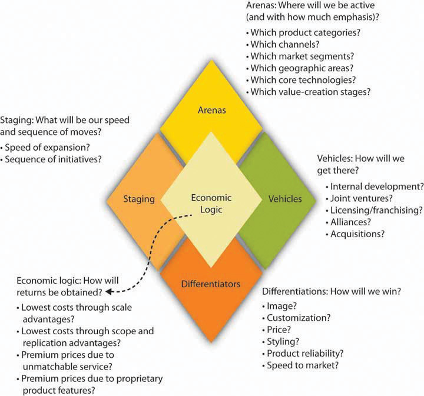

Good strategy formulation means refining the elements of the strategy. First of all, don’t confuse part of a strategy for a strategy itself. Being a low-cost provider or first mover in a market may be part of a strategy or the underlying logic of a particular strategy, but it’s not a complete strategy. It’s also important not to confuse your mission or vision with a strategy, even though the former are essential to the development and execution of good strategies.
As noted earlier, a strategy is an integrated and externally oriented concept of how a firm will achieve its objectives—how it will compete against its rivals. A strategy consists of an integrated set of choices. These choices relate to five elements managers must consider when making decisions: (1) arenas, (2) differentiators, (3) vehicles, (4) staging and pacing, and (5) economic logic. This group of elements, which are central to the strategic management process outlined in Figure 10.6 "The Strategy Diamond", makes up the strategy diamondThe constellation of business, corporate, and international strategy elements in terms of arenas, differentiators, vehicles, staging and pacing, and economic logic.. Most strategic plans focus on one or two such elements, often leaving large gaps in the overall strategy. Only when you have answers to questions about each of these five elements can you determine whether your strategy is an integrated whole; you’ll also have a better idea of the areas in which your strategy needs to be revised or overhauled. As the strategy diamond figure shows, a good strategy considers the five key elements in order to arrive at specific answers to five questions:
Let’s take a closer look at each of these elements.
Figure 10.6 The Strategy Diamond
Source: Adapted from Donald C. Hambrick and James W. Fredrickson, “Are You Sure You Have a Strategy?,” Academy of Management Executive 19, no. 4 (2005): 51–62.
ArenasThe facet of the strategy diamond that identifies the areas in which a firm will be active, such as industry segments, geographic markets, and channels segments. are areas in which a firm will be active. Decisions about a firm’s arenas may encompass its products, services, distribution channels, market segments, geographic areas, technologies, and even stages of the value-creation process. Unlike vision statements, which tend to be fairly general, the identification of arenas must be very specific. It clearly tells managers what the firm should and should not do. In addition, because firms can contract with outside parties for everything from employees to manufacturing services, the choice of arenas can be fairly narrowly defined for some firms.
For example, as the largest US bicycle distributor, Pacific Cycle owns the Schwinn, Mongoose, and GT brands and sells its bikes through big-box retail outlets and independent dealers, as well as through independent agents in foreign markets. In addition to these arena choices, Pacific Cycle has entirely outsourced the production of its products to Asian manufacturers. This is important in the sense that the strategy diamond also helps the firm be precise in regard to which activities it will engage itself and which ones it will outsource and where. As you know, Asia happens to be a low-cost source of high-quality manufactured goods. In outsourcing shoes and apparel lines, Nike follows a similar strategy in terms of arenas. One key difference, however, is that Nike, through its Nike Town retail outlets, has also chosen a direct retail presence in addition to its use of traditional retail-distribution channels.
The arenas facet of the strategy diamond helps you answer questions about business strategy—that is, it helps you determine which particular industry or geographic segments are the firm’s prime competitive arenas. The arenas facet also allows you to summarize corporate strategy—that is, it allows you to summarize which group of industry and geographic segments the firm competes in.
DifferentiatorsThe facet of the strategy diamond that comprises features and attributes of a company’s product or service that help it beat its competitors in the marketplace. are features and attributes of a company’s product or service that help it beat its competitors in the marketplace. Firms can be successful in the marketplace along a number of common dimensions, including image, customization, technical superiority, price, quality, and reliability. Japanese automakers Toyota and Honda have done very well by providing effective combinations of differentiators. They sell both inexpensive cars and high-end cars with high-quality features, and many consumers find the value that they provide hard to match. However, even though the best strategies often combine differentiators, history has shown that firms often perform poorly when they try to be all things to all consumers. It’s difficult to imagine, for instance, a single product that boasts both state-of-the-art technology and the lowest price on the market. Part of the problem is perceptual—consumers often associate low quality with low prices. Part of it is practical—leading-edge technologies cost money to develop and command higher prices because of their uniqueness or quality.
There are two critical factors in selecting differentiators:
Audi is an example of a company that has aligned these two factors successfully. Several years ago, Audi management realized that its cars were perceived as low-quality but high-priced German automobiles—obviously a poor competitive position. The firm decided that it had to move one way or another—up market or down market. It had to do one of two things: (1) lower its costs so that its pricing was consistent with customers’ perceptions of product quality or (2) improve quality sufficiently to justify premium pricing. Given limited resources, the firm couldn’t go in both directions; that is, it couldn’t produce cars in both the low-price and high-quality strata. Audi made a decision to invest heavily in quality programs and in refining its marketing efforts. Ten years later, the quality of Audi cars has increased significantly, and customer perception has moved them much closer to the level of BMW and Mercedes-Benz. Audi has reaped the benefits of premium pricing and improved profitability, but the decisions behind the strategic up-market move entailed significant trade-offs.
Differentiators are what drive potential customers to choose one firm’s offerings over those of competitors. The earlier and more consistent the firm is at driving these differentiators, the greater the likelihood that customers will recognize them.
VehiclesThe facet of the strategy diamond that relates to the means for participating in targeted arenas, such as alliances, organic growth, or acquisition. are the means for participating in targeted arenas. For instance, a firm that wants to go international can do so in different ways. In a recent drive to enter certain international markets (e.g., Argentina), Walmart has opened new stores and grown organically—meaning that it developed all the stores internally as opposed to acquiring stores already based in the countries it wanted to enter. Elsewhere (namely, in England and Germany), Walmart has purchased existing retailers and is in the process of transferring its unique way of doing business to the acquired companies. Likewise, a firm that requires a new technology could develop it through investments in research and development (R&D). Or it could opt to form an alliance with a competitor or a supplier that already possesses the technology, accelerating the integration of the missing piece into its set of resources and capabilities. Finally, it could simply buy another firm that owns the technology. In this case, the possible vehicles for entering a new arena include acquisitions, alliances, and organic investment and growth.
Staging and pacingThe facet of the strategy diamond that refers to the timing and speed of strategic moves. refer to the timing and speed, or pace, of strategic moves. Staging choices typically reflect available resources, including cash, human capital, and knowledge. At what point, for example, should Walmart have added international markets to its strategy? Perhaps if the company had pursued global opportunities earlier, it would have been able to develop a better sense of foreign market conditions and even spread the cost of entry over a longer period of time. However, by delaying its international moves, the company was able to focus on dominating the US market, which is—after all—the largest retail market in the world. Despite mixed results overseas, Walmart is the undisputed leader in global retailing and has recently increased its emphasis on international markets as the basis for future growth.
Staging decisions should be driven by several factors—resources, urgency, credibility, and the need for early wins. Because few firms have the resources to do everything they’d like to do immediately, they usually have to match opportunities with available resources. In addition, not all opportunities to enter new arenas are permanent; some have only brief windows. In such cases, early wins and the credibility of certain key stakeholders may be necessary to implement a strategy.
Economic logicThe facet of the strategy diamond that refers to how a firm will earn a profit; that is, how a firm will generate positive returns over and above its cost of capital. refers to how the firm will earn a profit—that is, how the firm will generate positive returns over and above its cost of capital. Economic logic is the “fulcrum” for profit creation. Earning normal profits, of course, requires a firm to meet all fixed, variable, and financing costs. Achieving desired returns over the firm’s cost of capital is a tall order for any organization. In analyzing a firm’s economic logic, think of both costs and revenues. Sometimes economic logic resides primarily on the cost side of the equation. Irish airline Ryanair, for example, can fly passengers for significantly lower costs per passenger mile than any major competitor. At other times, economic logic may rest on the firm’s ability to increase the customer’s willingness to pay premium prices for products (in other words, prices that significantly exceed the costs of providing enhanced products).
When the five elements of strategy are aligned and mutually reinforcing, the firm is generally in a position to perform well. High performance levels, however, ultimately mean that a strategy is also being executed well. This leads to strategy implementation.
As you learn to apply the strategy diamond to issues about international business, you will probably work through three related questions:
Answering the first question requires an understanding of the international strategy’s economic logic and how the strategy is supported by the current differentiators. Answering the second question includes identifying specific regions and countries and the criteria that might be used to prioritize potential markets. Finally, the answer to the third question involves whether the organization should enter the new international market on its own, with a partner, or through acquisition.
Considering the responses to these questions, you’ll then have a new strategy diamond that addresses the following:
The strategy diamond helps you develop international strategy, using three related questions:
(AACSB: Reflective Thinking, Analytical Skills)